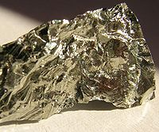

Numero atomico: 32
Massa atomica: 72,63
Temperatura di fusione (°C): 937
Temperatura di ebolizione (°C): 2830
Energia di prima ionizzazione (kj/mol): 762
Elettronegatività (secondo Pauling): 2,01
Densità: 5,32
Numeri di ossidazione: +2+4
Configurazione elettronica: 1s2, 2s2, 2p6, 3s2, 3p6, 3d10, 4s2, 4p2
Maggiori Informazioni